Tomáš Petříček, 204 (2nd floor)
petricek@d3s.mff.cuni.cz
@tomasp.net
https://tomasp.net
David Corfield
philosophy of mathematics
Jaroslav Nesetril
discrete mathematics
Tomas Petricek
programming languages
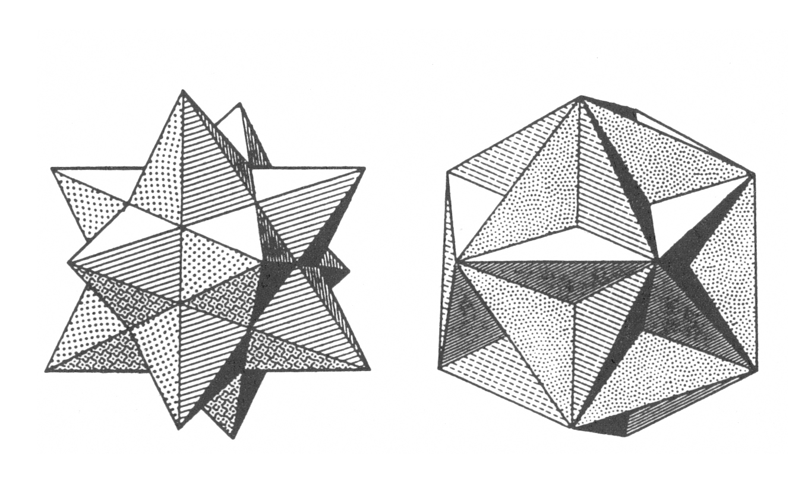
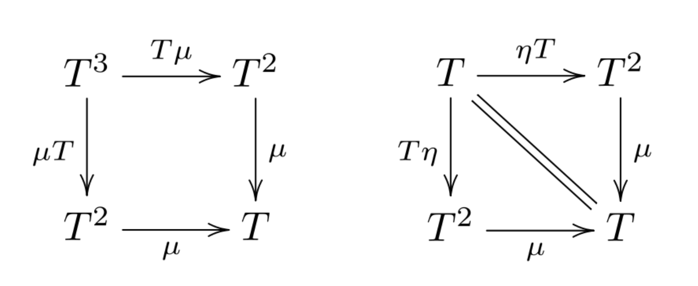
Please note that the plan is subject to change!
The exam can be completed either as an oral exam covering topics discussed during the given semester, or as an individual project on a topic agreed with the instructors.
Talk to us to discuss ideas!
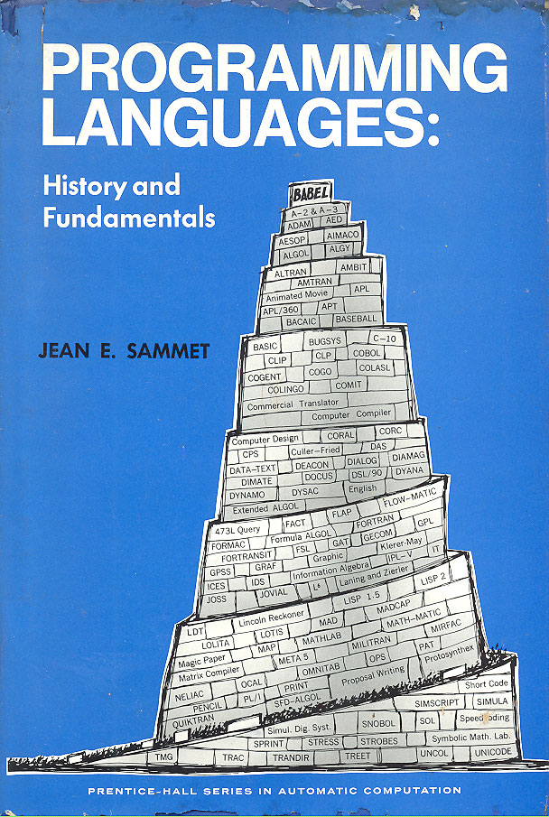
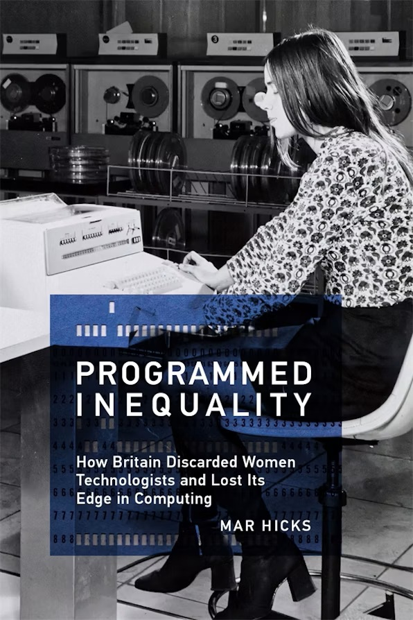
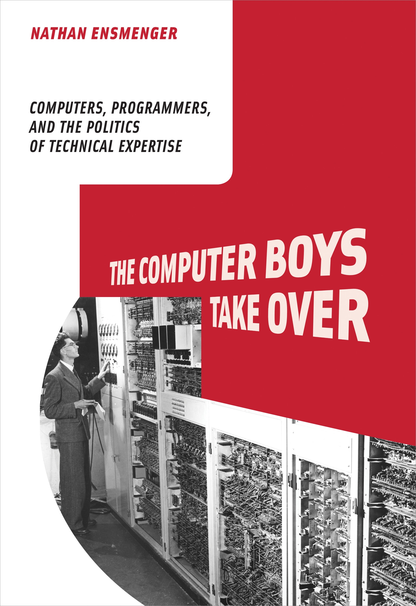
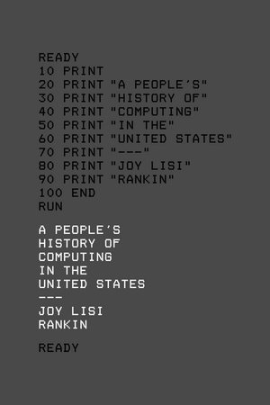
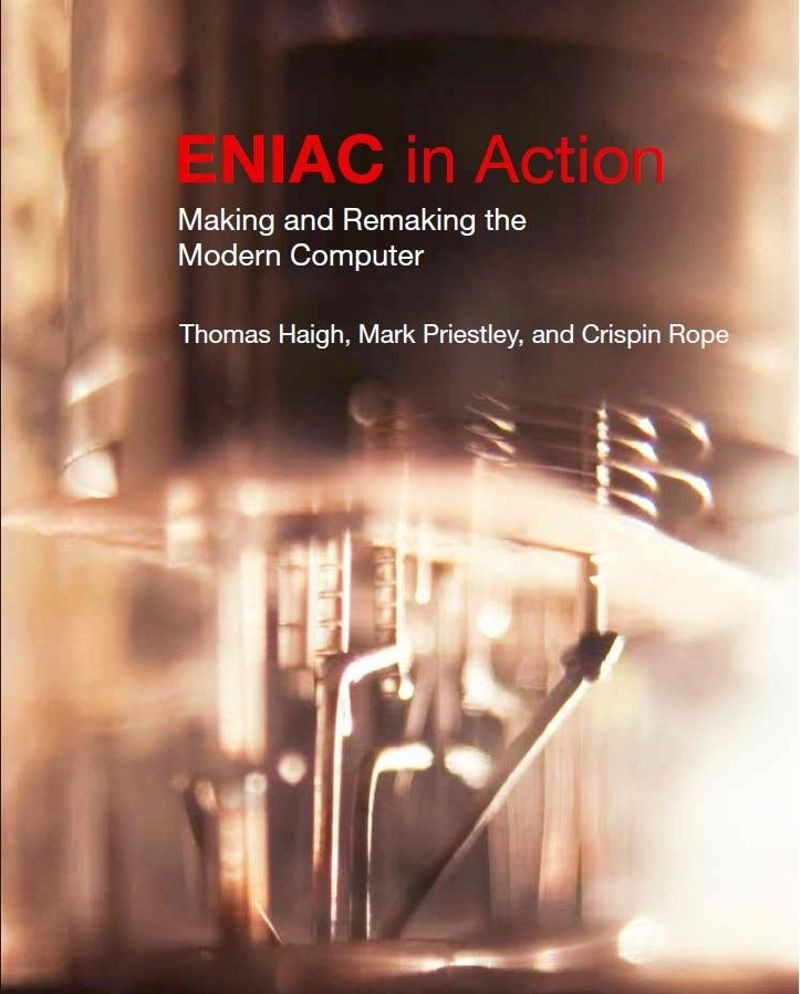
Document design, construction, testing, and use by the military
Reconfiguration of ENIAC in 1947-48
and the atomic
fission simulation
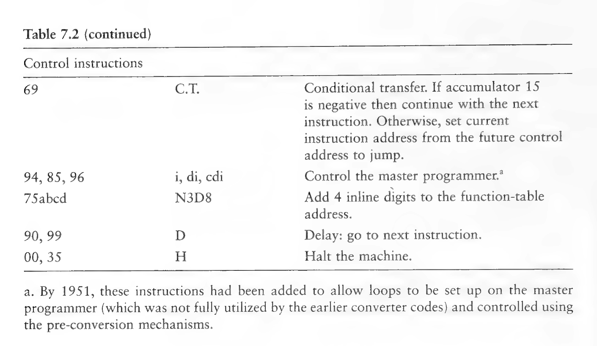
Inspired by later EDVAC report
"the storage of programming data by means of the function table"
51 Order Code
developed in 1947
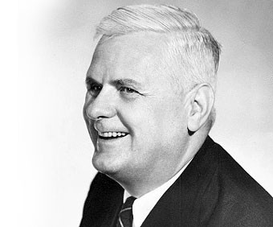
Lambda calculus model
based on pure functions
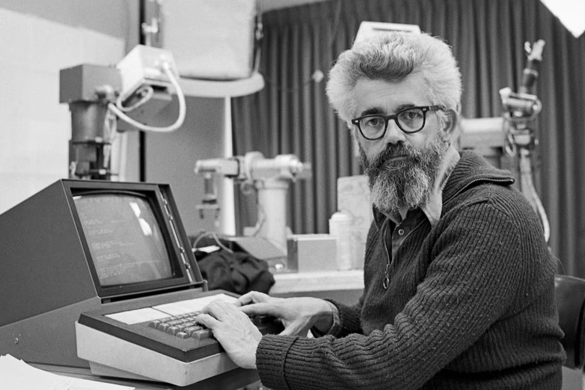
Creates the LISP language
based on the lambda calculus
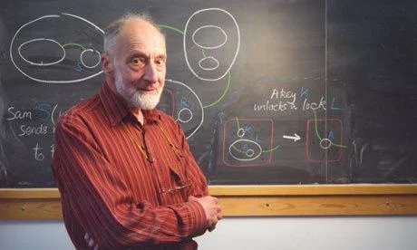
ML language adds static types
with automatic type inference
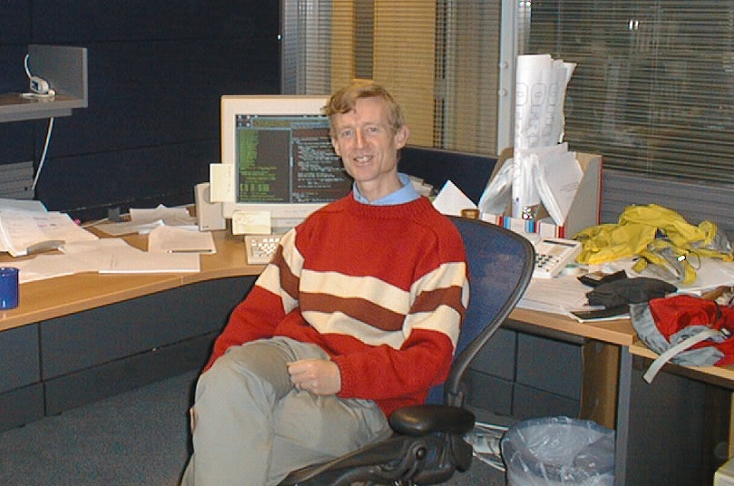
Created Haskell, a statically-typed
and lazy functional language
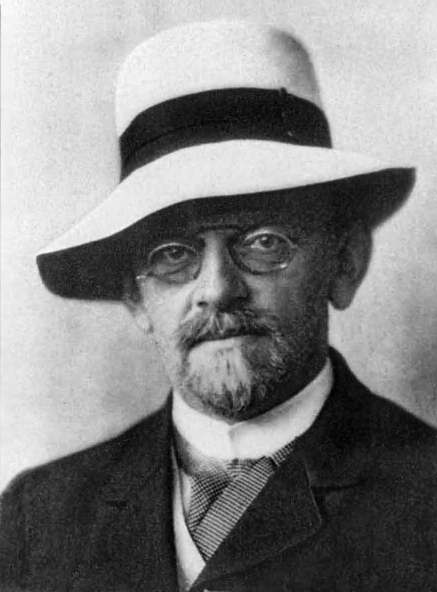
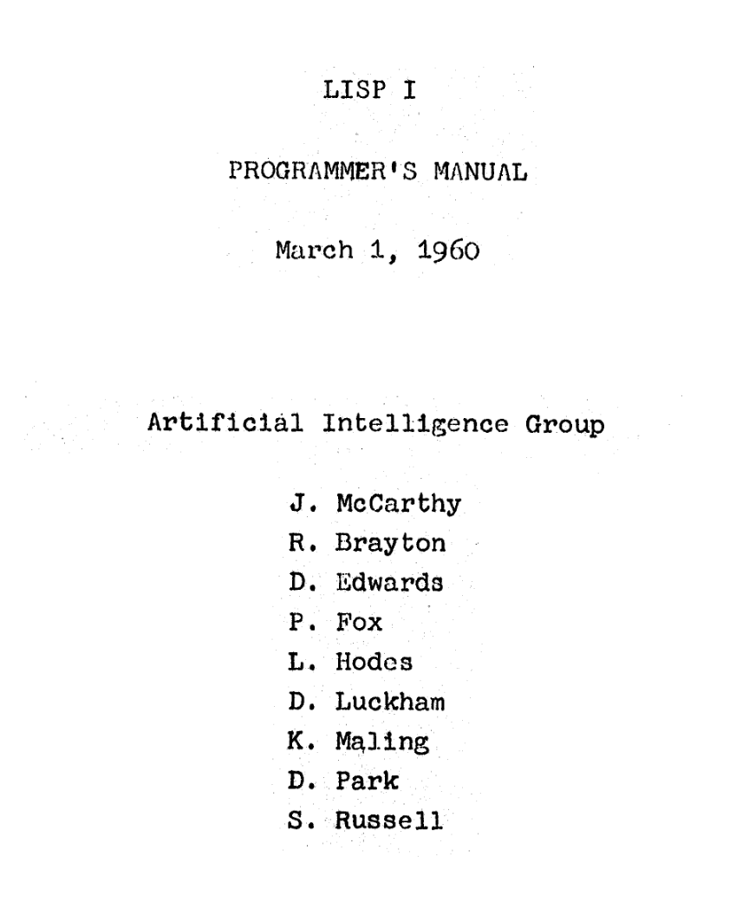
FOTRAN for numerical computing, COBOL for business records
Manipulation of symbolic expressions in the context of good old fashioned AI
Initial project was an addition to for FOTRAN
LAMBDAgoto before conditionals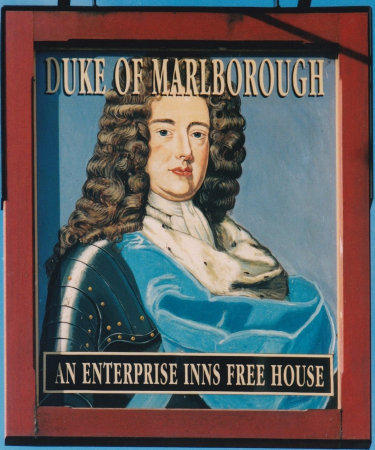
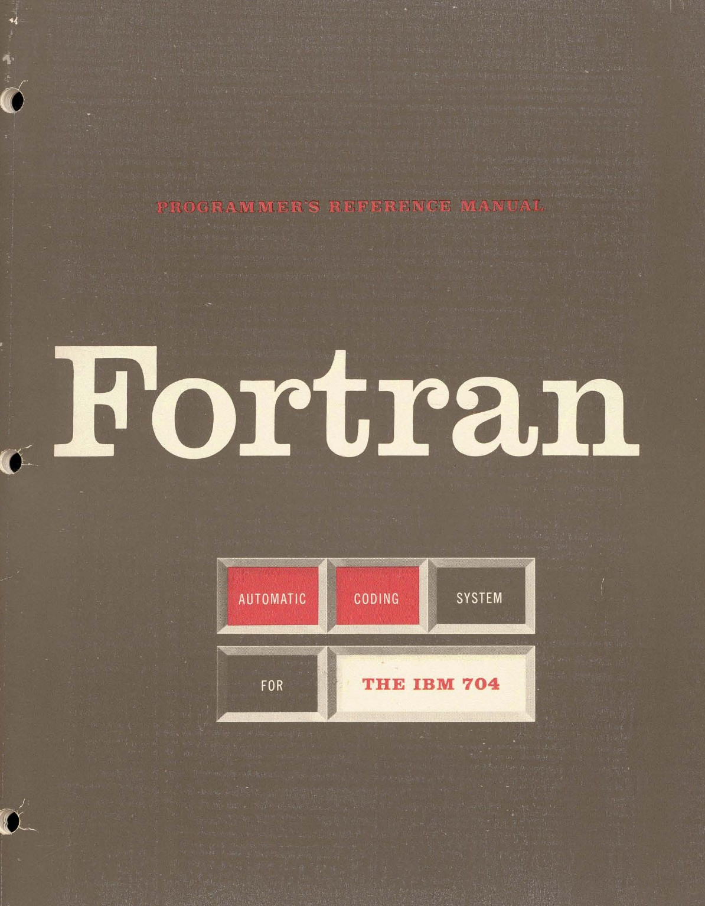
FORTRAN for IBM 704
[A function] may be desired to state the argument either in fixed or floating point; similarly the function itself may be in either of these modes. Thus a function of a single argument has 4 possible mode configurations.
No reference to logic or \(\lambda\)-calculus
Integers are of type integer. All other numbers are of type real. (...) The various "types" (integer, real, Boolean) basically denote properties of values.
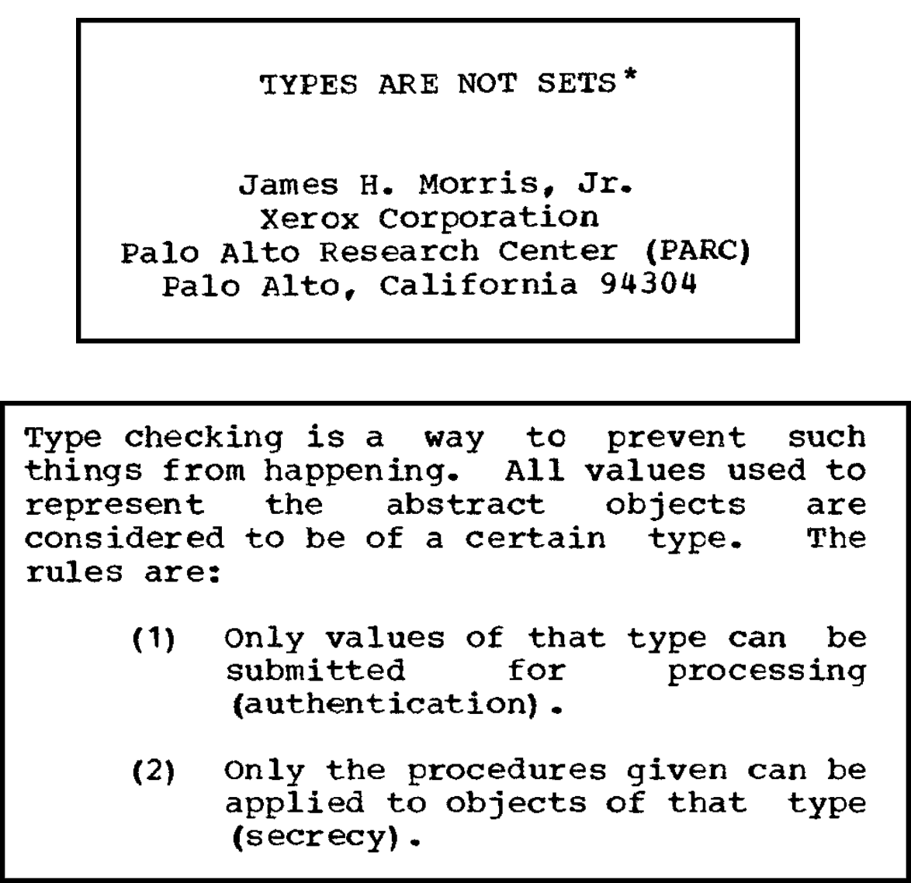
Sets of possible values
Cartesian products
to model records
Types are not sets (1974)
Inspired by Landin's work
but does not cite typed
lambda calculus
The first confusion we should avoid is that between logical types and what we might call data types. The former are what we invoke to study the latter.